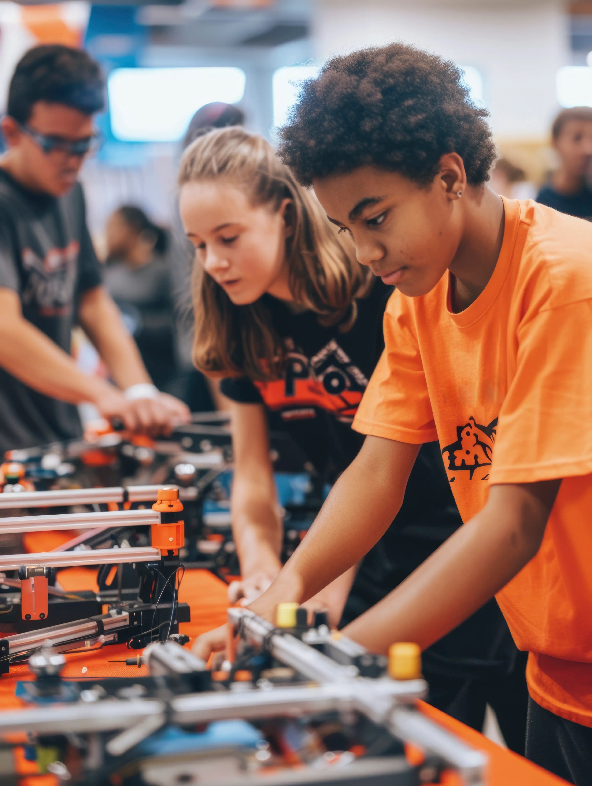
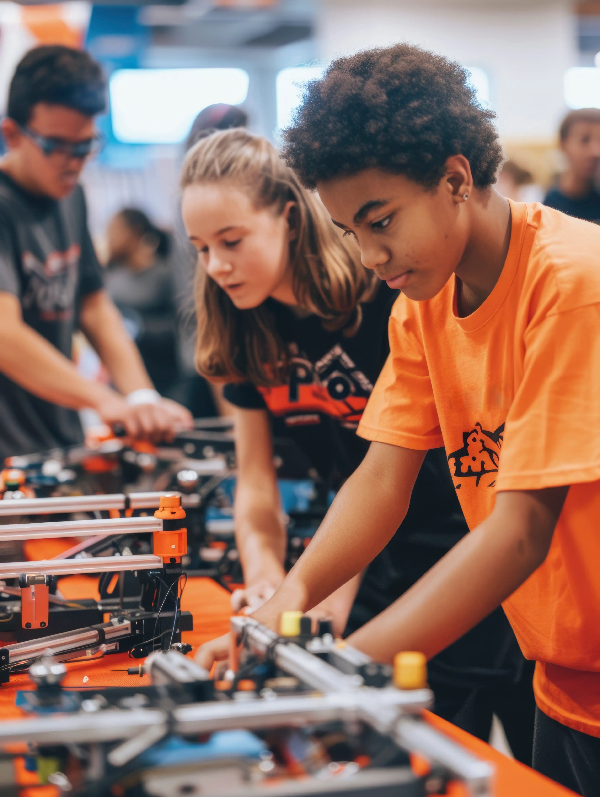

Inovação
Os alunos do 9º ano desenvolveram protótipos funcionais utilizando componentes eletrônicos de computadores antigos e materiais recicláveis.
O projeto integrou conhecimentos de física (eletricidade), matemática (cálculos de engrenagem) e sustentabilidade. Os robôs foram programados para realizar tarefas simples de movimentação, demonstrando que a tecnologia pode ser acessível e consciente.